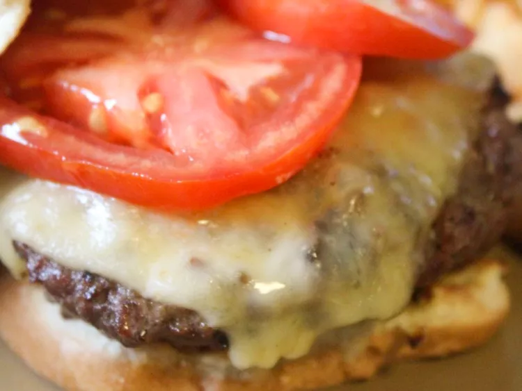

Easy Bacon, Onion, and Cheese-stuffed Burgers

Description
These wonderful cheese-stuffed burgers with bacon and caramelized onions are easy to adapt to suit different tastes. My kids, who normally don't have onions on their burgers, really enjoyed these. You can pan-fry them instead of grilling if you prefer.
Ingredients
- 3 pounds ground beef
- 3 tablespoon barbecue sauce
- ½ teaspoon garlic powder
- ½ teaspoon ground black pepper
- ¼ teaspoon salt
- ½ pound bacon, cut into ¼ inch pieces
- 1 medium onion, finely chopped
- ¾ cup shredded Cheddar Cheese
- 6 hamburger buns, split
Steps
-
Mix ground beef, barbecue sauce, garlic powder, black pepper, and salt in a large mixing bowl, using your hand. Shape a small handful at a time (approximately ¼ pound) into 12 thin patties. Lay patties out on a cookie sheet and cover with plastic wrap; place patties in the refrigerator
-
Place bacon in a large skillet and cook over medium-high heat, turning occasionally, until evenly browned, about 5 minutes. Remove bacon from skillet with a slotted spoon and drain on paper towel. Reduce the heat to medium and cook onions in remaining bacon dripping until soft and just beginning to brown. Mix onions and bacon in a small bowl.
-
Preheat an outdoor grill for medium heat and lightly oil the grate
-
Meanwhile, remove beef patties from the refrigerator; top 6 patties with 1-½ tablespoons of bacon and onion mixture, and sprinkle with shredded cheese. Top each with one of the remaining patties and press the edges together to seal.
-
Grill stuffed patties until beef is no longer pink in the center, about 4 to 5 minutes per side. An instant-read thermometer inserted into the center should read at least 160 degrees F (70 degrees C). Serve on hamburger buns with condiments of your choice.